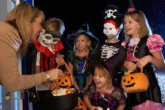
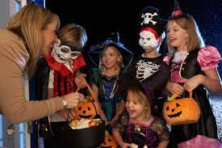
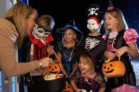

ჰელოუინი (ინგლ. Halloween, თავდ. All Hallows' even - ყველა წმინდანის საღამო) — დღესასწაული, რომელიც აღინიშნება ყოველი წლის 31 ოქტომბერს, დასავლური ტრადიციით ყველა წმინდანის დღის წინა დღეს. აღნიშვნის დროს ტარდება სხვადასხვა ღონისძიება და მსვლელობა — თამაშები, ფოიერვერკები, კოსტიუმირებული წვეულებები, „მოჩვენებებიანი სახლების“ მონახულება, საზარელი ისტორიების თხრობა და საშინელებათა ფილმების რეტროსპექტივები. ჰელოუინთან არის დაკავშირებული გოგრებში თვალებისა და პირების ამოჭრის ტრადიცია. დღესასწაულის ელემენტები ჩრდილოეთ ამერიკაში ირლანდიელმა მიგრანტებმა XIX საუკუნეში ჩაიტანეს. სხვა ქვეყნებში ეს დღესასწაული XX საუკუნეში გავრცელდა. ჰელოუინი აღინიშნება დიდ ბრიტანეთში, ესპანეთში, აშშ-ში, კანადაში, ირლანდიაში, პუერტო-რიკოში, იაპონიაში, ახალ ზელანდიაში და ავსტრალიის სხვადასხვა ნაწილებში. შვედეთში „ყველა წმინდანის“ დღესასწაული ტარდება ყოველი წლის ნოემბრის პირველ შაბათს.
